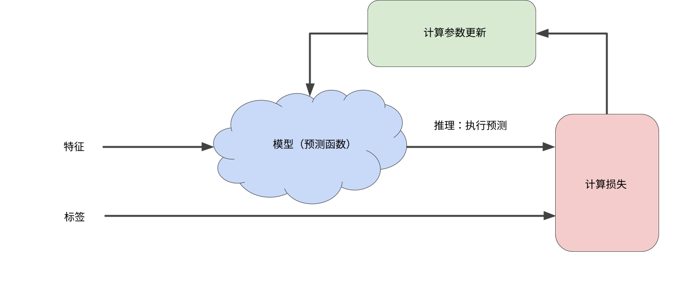
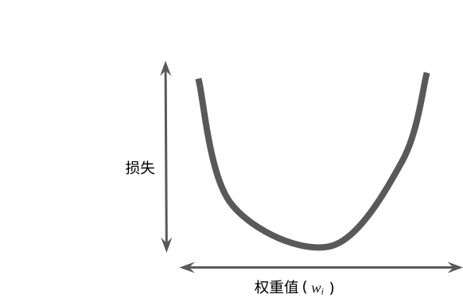
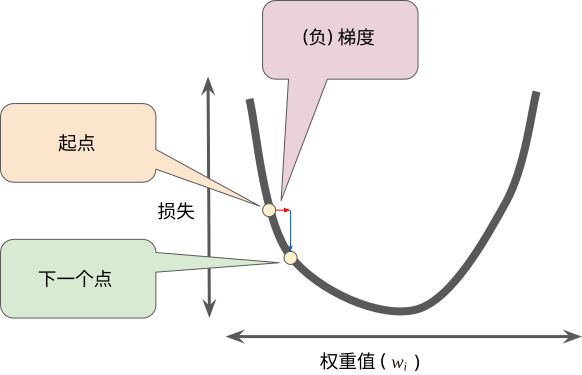
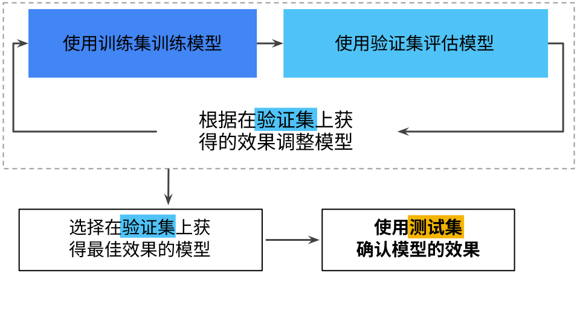
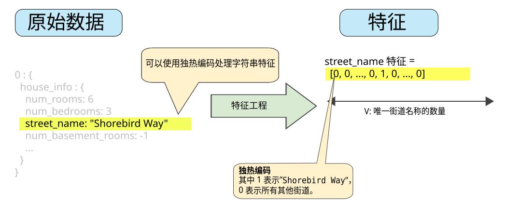
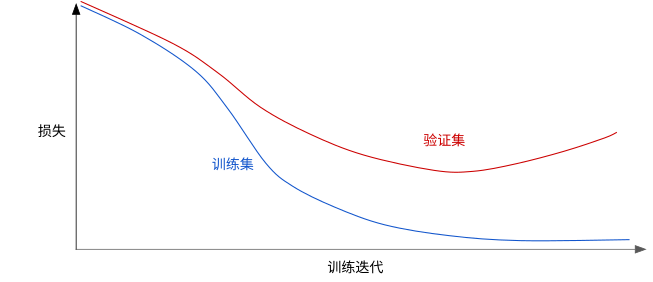
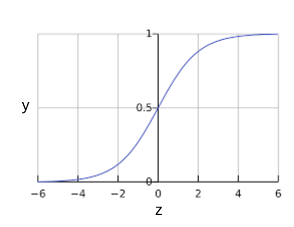
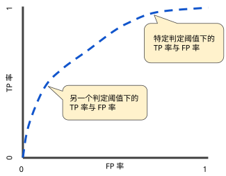
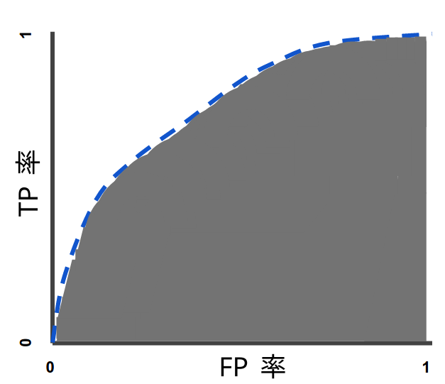

机器学习之相关概念
机器学习是人工智能的一个分支。人工智能的研究历史有着一条从以“推理”为重点，到以“知识”为重点，再到以“学习”为重点的自然、清晰的脉络。显然，机器学习是实现人工智能的一个途径，即以机器学习为手段解决人工智能中的问题。
定义
机器学习有下面几种定义：
- 机器学习是一门人工智能的科学，该领域的主要研究对象是人工智能，特别是如何在经验学习中改善具体算法的性能。
- 机器学习是对能通过经验自动改进的计算机算法的研究。
- 机器学习是用数据或以往的经验，以此优化计算机程序的性能标准。
一种经常引用的英文定义是：A computer program is said to learn from experience E with respect to some class of tasks T and performance measure P, if its performance at tasks in T, as measured by P, improves with experience E.
分类
机器学习可以分成下面几种类别：
- 监督学习：从给定的训练数据集中学习出一个函数，当新的数据到来时，可以根据这个函数预测结果。监督学习的训练集要求是包括输入和输出，也可以说是特征和目标。训练集中的目标是由人标注的。常见的监督学习算法包括回归分析和统计分类。
监督学习和非监督学习的差别就是训练集目标是否人标注。他们都有训练集且都有输入和输出。
- 无监督学习：与监督学习相比，训练集没有人为标注的结果。常见的无监督学习算法有生成对抗网络（GAN）、聚类。
- 半监督学习：介于监督学习与无监督学习之间。
- 强化学习：通过观察来学习做成如何的动作。每个动作都会对环境有所影响，学习对象根据观察到的周围环境的反馈来做出判断。
算法
具体的机器学习算法有：
- 构造间隔理论分布：聚类分析和模式识别
- 人工神经网络
- 决策树
- 感知器
- 支持向量机
- 集成学习AdaBoost
- 降维与度量学习
- 聚类
- 贝叶斯分类器
- 构造条件概率：回归分析和统计分类
- 高斯过程回归
- 线性判别分析
- 最近邻居法
- 径向基函数核
- 通过再生模型构造概率密度函数：
- 最大期望算法
- 概率图模型：包括贝叶斯网和Markov随机场
- Generative Topographic Mapping
- 近似推断技术：
- 马尔可夫链
- 蒙特卡罗方法
- 变分法
- 最优化：大多数以上方法，直接或者间接使用最优化算法。
机器学习基础
标签
标签是我们要预测的事物，即简单线性回归中的 y 变量。标签可以是小麦未来的价格、图片中显示的动物品种、音频剪辑的含义或任何事物。
特征
特征是输入变量，即简单线性回归中的 x 变量。简单的机器学习项目可能会使用单个特征，而比较复杂的机器学习项目可能会使用数百万个特征，按如下方式指定：
$${ x_1,x_2,…x_N } $$
在垃圾邮件检测器示例中，特征可能包括：
- 电子邮件文本中的字词
- 发件人的地址
- 发送电子邮件的时段
- 电子邮件中包含“一种奇怪的把戏”这样的短语。
样本
样本是指数据的特定实例：x。（我们采用粗体 x 表示它是一个矢量。）我们将样本分为以下两类：
- 有标签样本
- 无标签样本
有标签样本同时包含特征和标签，常用于训练模型。。即：
1 | labeled examples: {features, label}: (x, y) |
无标签样本包含特征，但不包含标签，常用于模型预测。即：
1 | unlabeled examples: {features, ?}: (x, ?) |
模型
模型定义了特征与标签之间的关系。例如，垃圾邮件检测模型可能会将某些特征与“垃圾邮件”紧密联系起来。我们来重点介绍一下模型生命周期的两个阶段：
训练表示创建或学习模型。向模型展示有标签样本，让模型逐渐学习特征与标签之间的关系。
推断表示将训练后的模型应用于无标签样本。使用训练后的模型来做出有用的预测 (y’)。
回归与分类
回归模型可预测连续值。例如，回归模型做出的预测可回答如下问题：
加利福尼亚州一栋房产的价值是多少？
用户点击此广告的概率是多少？
分类模型可预测离散值。例如，分类模型做出的预测可回答如下问题：
某个指定电子邮件是垃圾邮件还是非垃圾邮件？
这是一张狗、猫还是仓鼠图片？
损失
训练模型表示通过有标签样本来学习（确定）所有权重和偏差的理想值。在监督式学习中，机器学习算法通过以下方式构建模型：检查多个样本并尝试找出可最大限度地减少损失的模型；这一过程称为经验风险最小化。
损失是对糟糕预测的惩罚。也就是说，损失是一个数值，表示对于单个样本而言模型预测的准确程度。如果模型的预测完全准确，则损失为零，否则损失会较大。训练模型的目标是从所有样本中找到一组平均损失“较小”的权重和偏差。
平方损失：又称为 $L_2$ 损失,一种常见的损失函数。例如单个样本的平方损失如下：
1 | = the square of the difference between the label and the prediction |
均方误差 (MSE) 指的是每个样本的平均平方损失。要计算 MSE，请求出各个样本的所有平方损失之和，然后除以样本数量：
$$
MSE = \frac{1}{N} \sum_{(x,y)\in D} (y - prediction(x))^2
$$
其中：
- (x,y)指的是样本，其中
- x指的是模型进行预测时使用的特征集（例如，温度、年龄和交配成功率）。
- y指的是样本的标签（例如，每分钟的鸣叫次数）。
- prediction(x)指的是权重和偏差与特征集 x 结合的函数。
- D指的是包含多个有标签样本（即 (x,y)）的数据集。
- N指的是D中的样本数量。
迭代方法
下图显示了机器学习算法用于训练模型的迭代试错过程：

梯度下降法
计算参数更新的目标是在模型的迭代试错过程中，使损失越来越小。而常用的方法就是梯度下降法。

对于图2所示的凸形问题，刚好存在一个斜率正好为 0 的位置，即是损失函数的收敛之处。梯度下降法的第一个阶段是为$w_1$ 选择一个起始值（起点）。
然后，梯度下降法算法会计算损失曲线在起点处的梯度。简而言之，梯度是偏导数的矢量；它可以让您了解哪个方向距离目标“更近”或“更远”。
请注意，梯度是一个矢量，因此具有以下两个特征：
- 方向
- 大小
梯度始终指向损失函数中增长最为迅猛的方向。梯度下降法算法会沿着负梯度的方向走一步，以便尽快降低损失。
为了确定损失函数曲线上的下一个点，梯度下降法算法会将梯度大小的一部分与起点相加，如图3所示：

然后，梯度下降法会重复此过程，逐渐接近最低点。
学习速率
梯度下降法算法用梯度乘以一个称为学习速率（有时也称为步长）的标量，以确定下一个点的位置。例如，如果梯度大小为 2.5，学习速率为 0.01，则梯度下降法算法会选择距离前一个点 0.025 的位置作为下一个点。
超参数是编程人员在机器学习算法中用于调整的旋钮。大多数机器学习编程人员会花费相当多的时间来调整学习速率。如果您选择的学习速率过小，就会花费太长的学习时间。如果您指定的学习速率过大，下一个点将永远在 U 形曲线的底部随意弹跳。
随机梯度下降法
在梯度下降法中，批量指的是用于在单次迭代中计算梯度的样本总数。到目前为止，我们一直假定批量是指整个数据集。就 Google 的规模而言，数据集通常包含数十亿甚至数千亿个样本。此外，Google 数据集通常包含海量特征。因此，一个批量可能相当巨大。如果是超大批量，则单次迭代就可能要花费很长时间进行计算。
通过从我们的数据集中随机选择样本，我们可以通过小得多的数据集估算（尽管过程非常杂乱）出较大的平均值。 随机梯度下降法 (SGD) 将这种想法运用到极致，它每次迭代只使用一个样本（批量大小为 1）。如果进行足够的迭代，SGD 也可以发挥作用，但过程会非常杂乱。“随机”这一术语表示构成各个批量的一个样本都是随机选择的。
小批量随机梯度下降法（小批量 SGD）是介于全批量迭代与 SGD 之间的折衷方案。小批量通常包含 10-1000 个随机选择的样本。小批量 SGD 可以减少 SGD 中的杂乱样本数量，但仍然比全批量更高效。
泛化(Generalization)
泛化是指机器学习对从真实概率分布（已隐藏）中抽取的新数据做出良好预测的能力。要取得良好的泛化能力，机器学习必须满足以下基本假设，同时防止过拟合。
机器学习的基本假设：
- 从分布中随机抽取独立同分布 (i.i.d) 的样本。换言之，样本之间不会互相影响。（另一种解释：i.i.d. 是表示变量随机性的一种方式）。
- 分布是平稳的；即分布在数据集内不会发生变化。
- 从同一分布的数据划分中抽取样本。
过拟合模型在训练过程中产生的损失很低，但在预测新数据方面的表现却非常糟糕。
训练集与测试集
机器学习模型旨在根据以前未见过的新数据做出良好预测。但是，如果您要根据数据集构建模型，如何获得以前未见过的数据呢？一种方法是将您的数据集分成两个子集：
- 训练集 - 用于训练模型的子集。
- 测试集 - 用于测试模型的子集。
测试集应满足以下两个条件：
- 规模足够大，可产生具有统计意义的结果。
- 能代表整个数据集。换言之，挑选的测试集的特征应该与训练集的特征相同。
验证集
将数据集划分为训练集和测试集两个子集是个不错的想法，但不是万能良方。通过将数据集划分为训练集、验证集、测试集三个子集，可以大幅降低过拟合的发生几率。
使用验证集评估训练集的效果。然后，在模型“通过”验证集之后，使用测试集再次检查评估结果。图4展示了这一新工作流程：

特征表示
特征工程指的是将原始数据转换为特征矢量。进行特征工程预计需要大量时间。
- 映射数值: 机器学习模型根据浮点值进行训练，因此整数和浮点原始数据不需要特殊编码。
- 映射字符串值: 首先为要表示的所有特征的字符串值定义一个词汇表。然后使用该词汇表创建一个独热编码，用于将指定字符串值表示为二元矢量。
- 映射分类（枚举）值

良好特征的特点
- 避免很少使用的离散特征值。
良好的特征值应该在数据集中出现大约 5 次以上。这样一来，模型就可以学习该特征值与标签是如何关联的。
- 最好具有清晰明确的含义。
每个特征对于项目中的任何人来说都应该具有清晰明确的含义。例如，下面的房龄适合作为特征，可立即识别为年龄：
1 | house_age: 27 |
- 不要将“神奇”的值与实际数据混为一谈
良好的浮点特征不包含超出范围的异常断点或“神奇”的值。例如，假设一个特征具有 0 到 1 之间的浮点值。那么，如下值是可以接受的：
1 | quality_rating: 0.82 |
不过，如果用户没有输入 quality_rating，则数据集可能使用如下神奇值来表示不存在该值：
1 | quality_rating: -1 |
为解决神奇值的问题，需将该特征转换为两个特征：
1 | 一个特征只存储质量评分，不含神奇值。 |
- 考虑上游不稳定性
特征的定义不应随时间发生变化。例如，下列值是有用的，因为城市名称一般不会改变。（注意，我们仍然需要将“br/sao_paulo”这样的字符串转换为独热矢量。）
1 | city_id: "br/sao_paulo" |
但收集由其他模型推理的值会产生额外成本。可能值“219”目前代表圣保罗，但这种表示在未来运行其他模型时可能轻易发生变化：
1 | inferred_city_cluster: "219" |
清理数据
即使是非常少量的坏样本会破坏掉一个大规模数据集，因此需花费大量的时间挑出坏样本并加工可以挽救的样本。
缩放特征值: 缩放是指将浮点特征值从自然范围（例如 100 到 900）转换为标准范围（例如 0 到 1 或 -1 到 +1）。如果特征集包含多个特征，则缩放特征可以带来以下优势：
- 帮助梯度下降法更快速地收敛。
- 帮助避免“NaN 陷阱”。
- 帮助模型为每个特征确定合适的权重。
处理极端离群值
- 对每个值取对数
- 将最大值“限制”为某个任意值
分箱
清查
数据集中的很多样本是不可靠的，原因有以下一种或多种：
- 遗漏值。 例如，有人忘记为某个房屋的年龄输入值。
- 重复样本。 例如，服务器错误地将同一条记录上传了两次。
- 不良标签。 例如，有人错误地将一颗橡树的图片标记为枫树。
- 不良特征值。 例如，有人输入了多余的位数，或者温度计被遗落在太阳底下。
正则化
图6泛化曲线显示的是训练集和验证集相对于训练迭代次数的损失。

图6显示的是某个模型的训练损失逐渐减少，但验证损失最终增加。换言之，该泛化曲线显示该模型与训练集中的数据过拟合。根据奥卡姆剃刀定律，或许我们可以通过降低复杂模型的复杂度来防止过拟合，这种原则称为正则化。
正则化以最小化损失和复杂度为目标，这称为结构风险最小化：
$$\text{minimize(Loss(Data|Model) + complexity(Model))}$$
现在，训练优化算法是一个由两项内容组成的函数：一个是损失项，用于衡量模型与数据的拟合度，另一个是正则化项，用于衡量模型复杂度。
有两种常用衡量模型复杂度的方法：
- 将模型复杂度作为模型中所有特征的权重的函数。
- 将模型复杂度作为具有非零权重的特征总数的函数。
如果模型复杂度是权重的函数，则特征权重的绝对值越高，对模型复杂度的贡献就越大。
L2正则化
可以使用 L2 正则化公式来量化复杂度，该公式将正则化项定义为所有特征权重的平方和：
$$L_2\text{ regularization term} = ||\boldsymbol w||_2^2 = {w_1^2 + w_2^2 + … + w_n^2}$$
在这个公式中，接近于 0 的权重对模型复杂度几乎没有影响，而离群值权重则可能会产生巨大的影响。
模型开发者通过以下方式来调整正则化项的整体影响：用正则化项的值乘以名为 lambda（又称为正则化率）的标量。也就是说，模型开发者会执行以下运算：
$$\text{minimize(Loss(Data|Model)} + \lambda \text{ complexity(Model))}$$
执行 L2 正则化对模型具有以下影响:
- 使权重值接近于 0（但并非正好为 0）
- 使权重的平均值接近于 0，且呈正态（钟形曲线或高斯曲线）分布。
在选择 lambda 值时，目标是在简单化和训练数据拟合之间达到适当的平衡：
如果您的 lambda 值过高，则模型会非常简单，但是您将面临数据欠拟合的风险。您的模型将无法从训练数据中获得足够的信息来做出有用的预测。
如果您的 lambda 值过低，则模型会比较复杂，并且您将面临数据过拟合的风险。您的模型将因获得过多训练数据特点方面的信息而无法泛化到新数据。
L1正则化
稀疏矢量通常包含许多维度。创建特征组合会导致包含更多维度。由于使用此类高维度特征矢量，因此模型可能会非常庞大，并且需要大量的 RAM。
在高维度稀疏矢量中，最好尽可能使权重正好降至 0。正好为 0 的权重基本上会使相应特征从模型中移除。 将特征设为 0 可节省 RAM 空间，且可以减少模型中的噪点。
L1 正则化使模型中很多信息缺乏的系数正好为 0，从而在推理时节省 RAM，同时具有凸优化的优势，可有效进行计算。
L2 和 L1 采用不同的方式降低权重：
- L2 会降低权重2。
- L1 会降低 |权重|。
因此，L2 和 L1 具有不同的导数：
- L2 的导数为 2 * 权重。
- L1 的导数为 k（一个常数，其值与权重无关）。
逻辑回归
许多问题需要将概率估算值作为输出。逻辑回归是一种极其高效的概率计算机制。实际上，您可以通过下两种方式之一使用返回的概率：
- “按原样”
- 转换成二元类别。
在很多情况下，您会将逻辑回归输出映射到二元分类问题的解决方案，该二元分类问题的目标是正确预测两个可能的标签（例如，“垃圾邮件”或“非垃圾邮件”）中的一个。
您可能想知道逻辑回归模型如何确保输出值始终落在 0 和 1 之间。巧合的是，S 型函数生成的输出值正好具有这些特性，其定义如下：
$$y = \frac{1}{1 + e^{-z}}$$
S 型函数会产生以下曲线图：

如果 z 表示使用逻辑回归训练的模型的线性层的输出，则 S 型(z) 函数会生成一个介于 0 和 1 之间的值（概率）。用数学方法表示为：
$$y’ = \frac{1}{1 + e^{-(z)}}$$
其中：
- y’ 是逻辑回归模型针对特定样本的输出。
- z 是 b + w1x1 + w2x2 + … wNxN
- “w”值是该模型学习的权重和偏差。
- “x”值是特定样本的特征值。
请注意，z 也称为对数几率，因为 S 型函数的反函数表明，z 可定义为标签“1”（例如“狗叫”）的概率除以标签“0”（例如“狗不叫”）的概率得出的值的对数：
$$z = log(\frac{y}{1-y})$$
逻辑回归模型训练
线性回归的损失函数是平方损失。逻辑回归的损失函数是对数损失函数，定义如下：
$$Log Loss = \sum_{(x,y)\in D} -ylog(y’) - (1 - y)log(1 - y’)$$
其中：
- (xy)ϵD 是包含很多有标签样本 (x,y) 的数据集。
- “y”是有标签样本中的标签。由于这是逻辑回归，因此“y”的每个值必须是 0 或 1。
- “y’”是对于特征集“x”的预测值（介于 0 和 1 之间）。
对数损失函数的方程式与 Shannon 信息论中的熵测量密切相关。它也是似然函数的负对数（假设“y”属于伯努利分布）。实际上，最大限度地降低损失函数的值会生成最大的似然估计值。
正则化在逻辑回归建模中极其重要。如果没有正则化，逻辑回归的渐近性会不断促使损失在高维度空间内达到 0。因此，大多数逻辑回归模型会使用以下两个策略之一来降低模型复杂性：
- L2 正则化。
- 早停法，即，限制训练步数或学习速率。
分类
指定阈值
为了将逻辑回归值映射到二元类别，您必须指定分类阈值（也称为判定阈值）。如果值高于该阈值，则表示“垃圾邮件”；如果值低于该阈值，则表示“非垃圾邮件”。人们往往会认为分类阈值应始终为 0.5，但阈值取决于具体问题，因此您必须对其进行调整。
真与假以及正类别与负类别
- 真正例是指模型将正类别样本正确地预测为正类别。
- 真负例是指模型将负类别样本正确地预测为负类别。
- 假正例是指模型将负类别样本错误地预测为正类别
- 假负例是指模型将正类别样本错误地预测为负类别。
准确率
准确率是一个用于评估分类模型的指标。通俗来说，准确率是指我们的模型预测正确的结果所占的比例。正式点说，准确率的定义如下：
$$\text{Accuracy} = \frac{\text{Number of correct predictions}}{\text{Total number of predictions}}$$
对于二元分类，也可以根据正类别和负类别按如下方式计算准确率：
$$\text{Accuracy} = \frac{TP+TN}{TP+TN+FP+FN}$$
其中，TP = 真正例，TN = 真负例，FP = 假正例，FN = 假负例。
精确率和召回率
当使用分类不平衡的数据集（比如正类别标签和负类别标签的数量之间存在明显差异）时，单单准确率一项并不能反映全面情况。这时需要能够更好地评估分类不平衡问题的指标：精确率和召回率。
精确率的定义如下：
$$\text{Precision} = \frac{TP}{TP+FP}$$
从数学上讲，召回率的定义如下：
$$\text{Recall} = \frac{TP}{TP+FN}$$
要全面评估模型的有效性，必须同时检查精确率和召回率。遗憾的是，精确率和召回率往往是此消彼长的情况。
ROC 和曲线下面积
ROC 曲线（接收者操作特征曲线）是一种显示分类模型在所有分类阈值下的效果的图表。该曲线绘制了以下两个参数：
- 真正例率
- 假正例率
真正例率 (TPR) 是召回率的同义词，因此定义如下：
$$TPR = \frac{TP} {TP + FN}$$
假正例率 (FPR) 的定义如下：
$$FPR = \frac{FP} {FP + TN}$$
ROC 曲线用于绘制采用不同分类阈值时的 TPR 与 FPR。降低分类阈值会导致将更多样本归为正类别，从而增加假正例和真正例的个数。下图显示了一个典型的 ROC 曲线。

曲线下面积表示“ROC 曲线下面积”。也就是说，曲线下面积测量的是从 (0,0) 到 (1,1) 之间整个 ROC 曲线以下的整个二维面积（参考积分学）。

曲线下面积对所有可能的分类阈值的效果进行综合衡量。曲线下面积的一种解读方式是看作模型将某个随机正类别样本排列在某个随机负类别样本之上的概率。
曲线下面积的取值范围为 0-1。预测结果 100% 错误的模型的曲线下面积为 0.0；而预测结果 100% 正确的模型的曲线下面积为 1.0。
曲线下面积因以下两个原因而比较实用：
- 曲线下面积的尺度不变。它测量预测的排名情况，而不是测量其绝对值。
- 曲线下面积的分类阈值不变。它测量模型预测的质量，而不考虑所选的分类阈值。
不过，这两个原因都有各自的局限性，这可能会导致曲线下面积在某些用例中不太实用：
并非总是希望尺度不变。 例如，有时我们非常需要被良好校准的概率输出，而曲线下面积无法告诉我们这一结果。
并非总是希望分类阈值不变。 在假负例与假正例的代价存在较大差异的情况下，尽量减少一种类型的分类错误可能至关重要。例如，在进行垃圾邮件检测时，您可能希望优先考虑尽量减少假正例（即使这会导致假负例大幅增加）。对于此类优化，曲线下面积并非一个实用的指标。
预测偏差
逻辑回归预测应当无偏差。即:
$$ \text{预测平均值}\approx\text{观察平均值}$$
预测偏差指的是这两个平均值之间的差值。即：
$$\text{预测偏差} = \text{预测平均值} - \text{数据集中相应标签的平均值}$$
造成预测偏差的可能原因包括：
- 特征集不完整
- 数据集混乱
- 模型实现流水线中有错误？
- 训练样本有偏差
- 正则化过强
端到端（end to end）
传统机器学习算法在应用过程中需要经历特征工程这一步骤，从研究对象中提取特征信息，便于后续的训练和测试。在传统机器学习中，特征工程非常重要，它提取特征的好坏关系到机器学习的最终效果。
本质上，特征工程是将研究对象信息降维的过程。而深度学习则无需这一手工提取特征的过程。以深度学习在图像分类中的应用为例，它直接输入高维的原始图像，输出即是图像分类。这个过程即叫做端到端。
参考链接
- 机器学习，by wikipedia.
- 机器学习速成课程，by google.
- MathJax使用LaTeX语法编写数学公式教程
- 什么是 end-to-end 神经网络？,by zhihu.
- 数学基础——浅谈似然,by shidata.
- 【机器学习】解构概率，重构世界：贝叶斯定理与智能世界的暗语,by 半截诗.